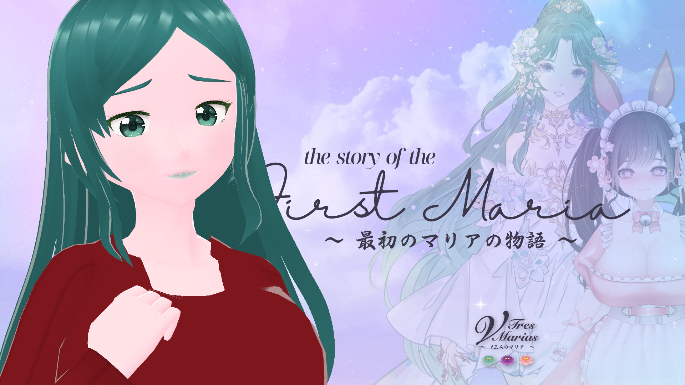

the Marias' universal hub!
「VTresMarias - V三人のマリア - 」 celebrates the continuing efforts of our VTuber Trio whose the goal is to make every moments universal -- to make them feel the love that they always deserve!!
founded by the one who makes everything possible, the goal is to recognize the efforts of the accomplices through the connections they made inside their pact and beyond!!
meet the Marias
description as of 26 Dec 2023
Mother Agatha, the First Maria
我慢 ～Perseverance～
thebelovedmoon -- popularized as 💚🍃Aga-chuu💗🌸 -- started streaming as a VTuber on 5 July 2022 under a different associated character. by August, he begin representing as the Mother, one of the characters whom he loved from Horror Shop Games. to give the character a fresh new look, he edited the hair and cosmetics to be colored green -- a symbol of rebirth following his initial friendship with Aura Ostara.
he is the founder of this Collective, aiming to spread the word about the Marias' legacy as well as to maintain friendships with the Marias and beyond.
outside of his VTubing venture, he enjoys gaming (especially DOAXVV), writing novels, PR, and technology. he also creates and maintains websites (like this one), and is willing to open commissions for others to begin their online presence.
the symbol reminds much of his dedication to try new things, as well as refining expertise in his respective fields for the sake of the future.
his oshi mark is 🍃.

Aura Ostara, the Second Maria
復活 ～Rebirth～
Aura Ostara debuted 30 June 2022 as a Celestial Nymph Guardian who plays variety games like Magicka and Mario Kart. she also does Just Chatting streams as she connects with her community through various ways.
she's currently on hiatus since 19 October due to her irl responsibilities. while it's unsure whether she'll return to streaming, we wish her the best in her endeavors.
the symbol reminds much of her lessons from her past mistakes as she leans forward to the future with the community and the friends she cherished along the way.
her oshi mark is 🪷.

Hina Oujo, the Third Maria
落ち着き ～Stability～
Hina Oujo -- currently known as HinaSukii -- initially debuted 3 July 2022 as a Queen from a faraway place that connects with the community through Art, Just Chatting and VALORANT.
she redebuted 26 November under Suzu Puyotori, one of the talents from an agency at the time. she announced her graduation 18 days later, to which her previous VTuber experience will take effect. Suzu Puyotori became Emii Shion, one of thebelovedmoon's other VTuber slates.
her third redebut was on 18 March 2023, where she rebranded as HinaSukii -- a comfy neko nurse. but due to her medical conditions, she announced her hiatus on 7 July.
the symbol reminds much of her physical and mental state in all communities involved. it becomes a general reminder for her to restrain from everything as much as possible to aid in her recovery during the worst of times, and know the parties to which she's closest to.
her oshi mark is 🌸.
explore the Symbols
the story of the First Maria is about to be told to the world.
in celebration of the Marias' First Anniversary, let's take a look at how the First Maria re-established her presence for the second time after what seemed to be her unfortunate demise.
join 💚🍃Aga-chuu💗🌸 -- the First Maria -- as he reveals the VTuber lore in its entirety this coming 27 Dec at 3:16pm CET, the First Anniversary of the Collective.
